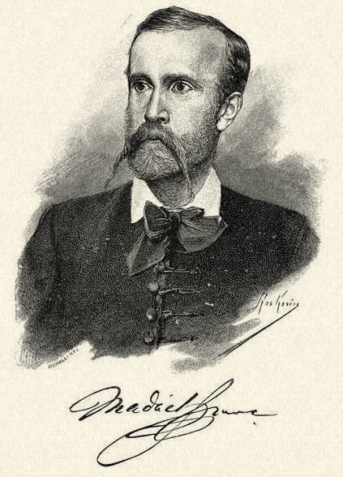

Az 1848–49-es forradalom és szabadságharc Magyarország újkori történetének egyik meghatározó eseménye, a modern nemzeti identitás egyik alapkövévé vált, mivel egyszerre törekedett az egyéni szabadságjogok kivívására és a nemzeti önrendelkezés megteremtésére. Társadalmi reformjaival a polgári átalakulás megindítója, önvédelmi harcával a nemzeti mitológia részévé vált. Szerves része volt az 1848-as európai forradalmi hullámnak, azok közül viszont lényegében egyedül jutott el sikeres katonai ellenállásig. Eredményességét mi sem bizonyítja jobban, mint hogy a Habsburg-ház csak az Orosz Birodalom katonai beavatkozásával tudott győzedelmeskedni. Az 1848–49-es szabadságharc a magyar nemzet történetének Magyarországon talán legismertebb háborús konfliktusa.
Az aradi vértanúk az a tizenhárom magyar honvédtiszt (12 tábornok és 1 ezredes), akiket az 1848–49-es forradalom és szabadságharc leverése után, az abban játszott szerepük miatt Aradon kivégeztek. Bár ezen honvédtisztek száma tizenhat, a nemzeti emlékezet mégis elsősorban az 1849. október 6-án kivégzett tizenhárom honvédtisztet nevezi így, gyakran használva a tizenhárom aradi vértanú, illetve az aradi tizenhármak elnevezést is.
Mindegyikük eleve aktív vagy az osztrák Császári-Királyi Hadseregből kilépett katonatiszt volt, a szabadságharc végén a magyar honvédseregben egyikük altábornagyi, tizenegyen vezérőrnagyi és egyikük ezredesi rendfokozatot viselt. Lázár Vilmos ezredest azért sorolták a tábornokokhoz, mert a szabadságharc végén önálló seregtestet irányított. A győztesek ellenben egyikük tábornoki rendfokozatát sem ismerték el hivatalosan. A vértanúk között Kiss Ernő honvéd altábornagy volt a rangidős, aki korábban k.k. (császári-királyi) ezredes volt, a többiek a közös hadseregben ennél alacsonyabb tiszti rendfokozatot viseltek.
Ugyanezen a napon végezték ki Pesten az első felelős magyar miniszterelnököt, Batthyány Lajost.
Az 1890. október 6-i aradi megemlékező ünnepségre a turini száműzetésében, fonográfhengerre is rögzítették Kossuth Lajos ünnepi beszédét, a hengert elvittek Aradra is és ekkor hallották először az emigrációban élő Kossuth hangját az aradi megemlékezők: „…nem borúlhatok le a magyar Golgota porába…”.

Nem néztetek erőst, hogy szolgáljátok,
Ki fényesen majd jutalmazni tud,
Akit szolgáltatok egy árva hon volt,
Im sírotokra emlékkő se jut.